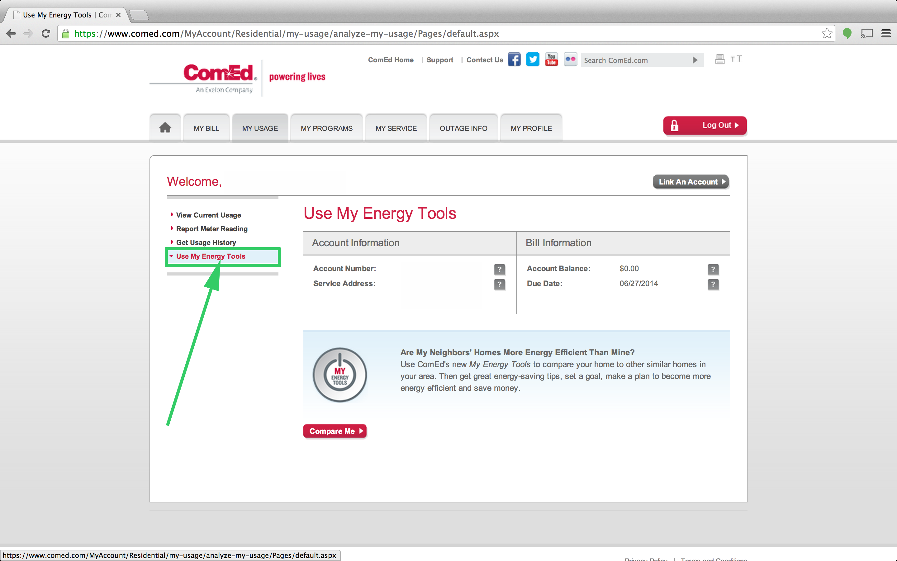
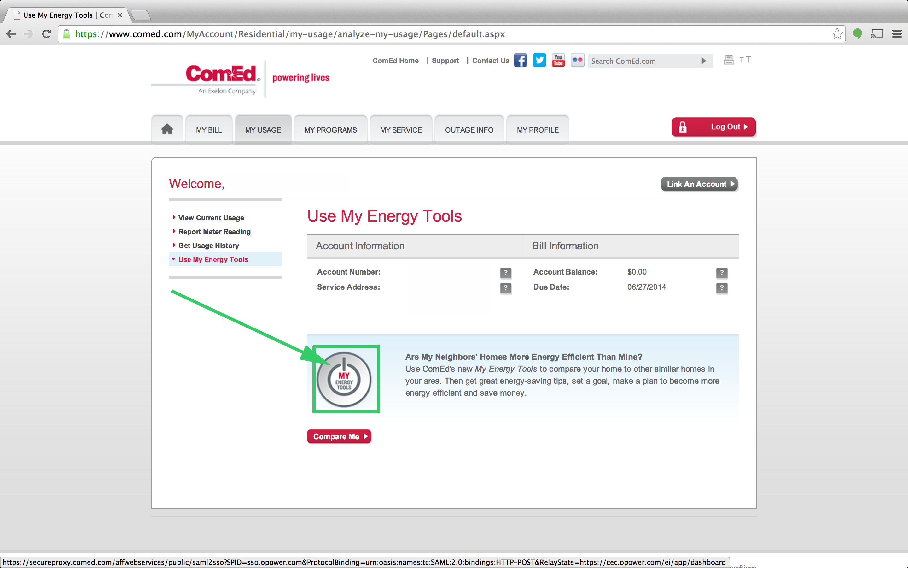
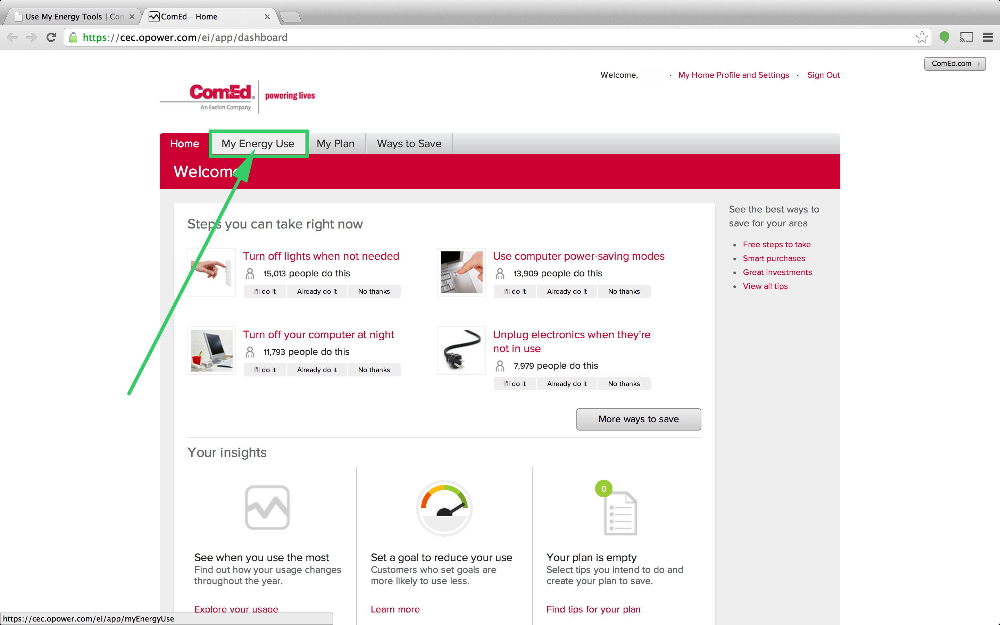
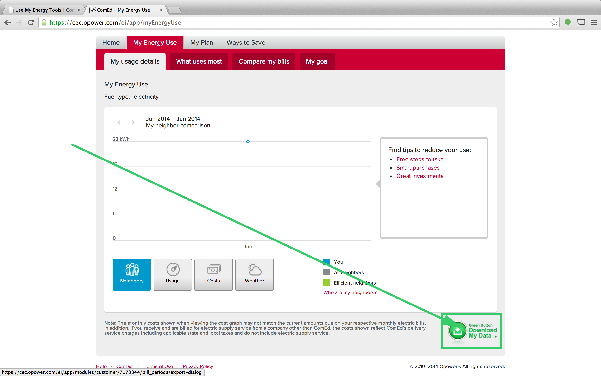
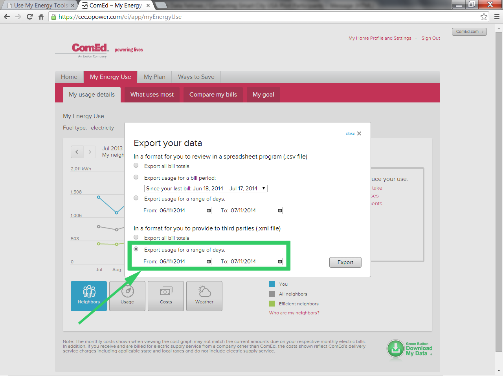

Step-by-Step Instructions
(Scroll down to see each step)

3. This will take you to a new page. From the left hand panel click Use My Energy Tools.
4. Click on the big power button in the center of the page.
5. At the top of the screen, there is a tab called My Energy Use. Click on this tab.
6. At the bottom of the page there is a Green Button which says Download My Data. Click on this button.
7. In the popup which will appear after selecting the green button, click the 'Export usage for a range of days' as an XML file. Please select the earliest date available. 
8. Complete this form, in which you will approve DSSG to access your smart meter data.
9. The form will give you an option to upload your data.
Thanks!